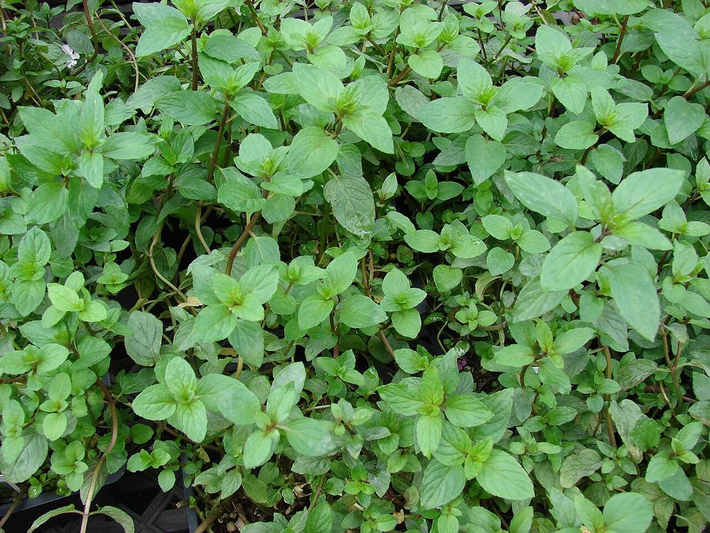
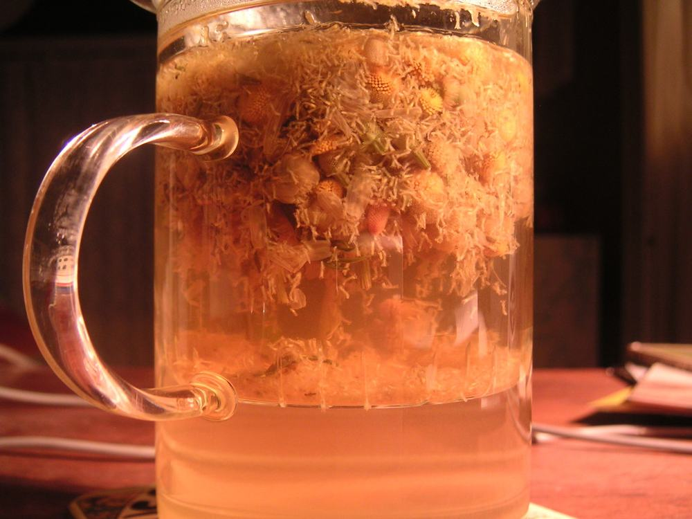

Conseils & Articles
Nos conseils en phytothérapie, rédigés par l'équipe de l'Herboristerie de Dinan.

5 min de lecture
Les plantes pour une digestion sereine
Menthe poivrée, fenouil, camomille, genévrier : les plantes médicinales les plus efficaces pour soulager les troubles digestifs naturellement.

6 min de lecture
Retrouver le sommeil naturellement grâce aux plantes
Valériane, passiflore, tilleul : les plantes médicinales pour favoriser un sommeil naturel et de qualité, sans effets secondaires.

4 min de lecture
Comment préparer une infusion parfaite
Température, temps d'infusion, dosage : le guide complet pour extraire au mieux les principes actifs de vos plantes médicinales.
5 min de lecture
Gérer le stress avec les plantes adaptogènes
Rhodiola, ashwagandha, mélisse : les plantes adaptogènes qui aident le corps à mieux s'adapter au stress et à retrouver l'équilibre nerveux.
5 min de lecture
Renforcer son immunité naturellement
Échinacée, astragale, propolis : les plantes qui soutiennent le système immunitaire pour affronter l'hiver et rester en forme toute l'année.

5 min de lecture
Les plantes pour accompagner la santé féminine
Sauge, alchémille, framboisier : les plantes traditionnellement utilisées pour accompagner la femme à chaque étape de sa vie.